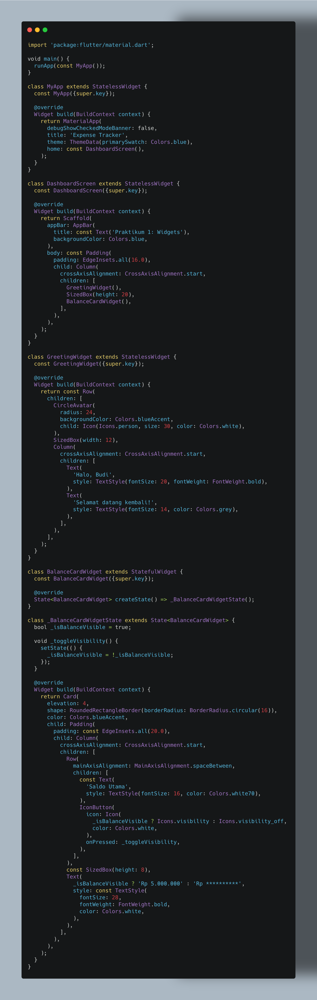
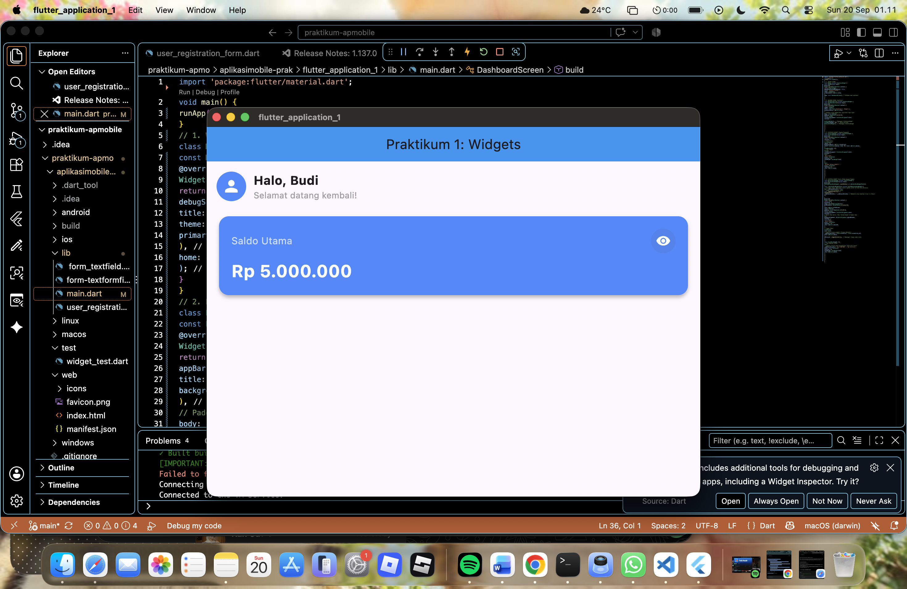
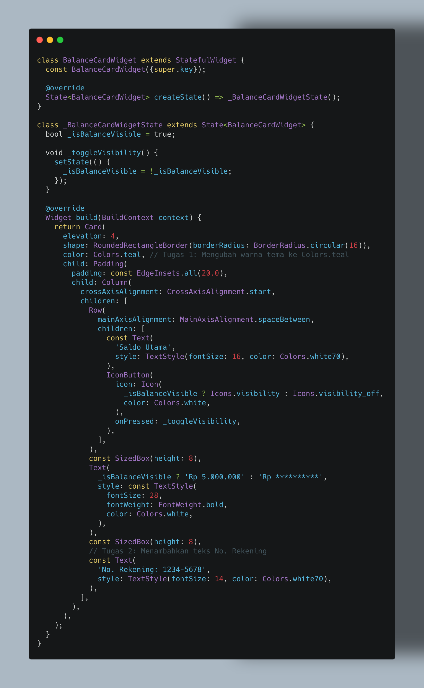
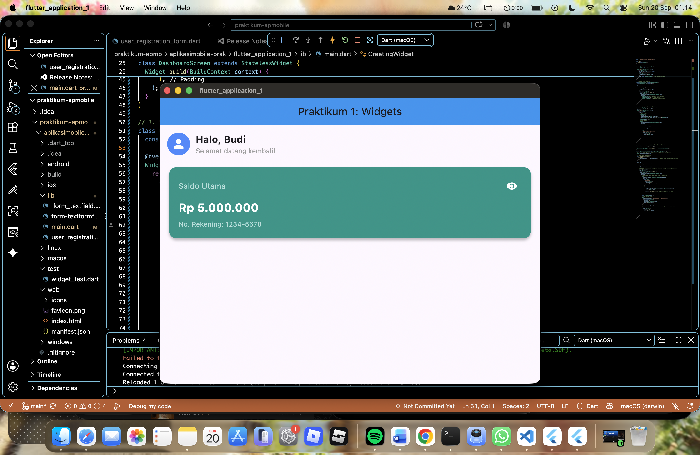
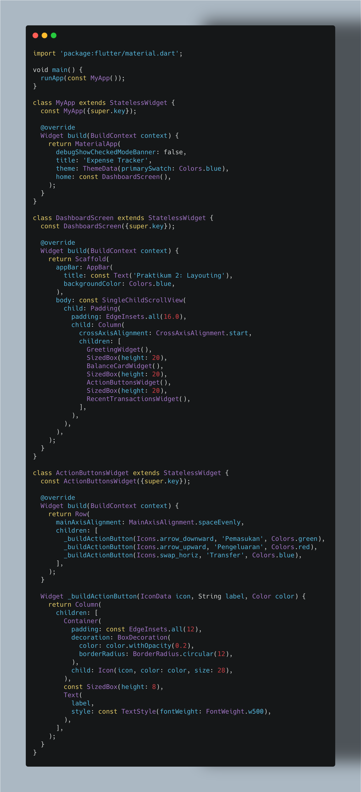
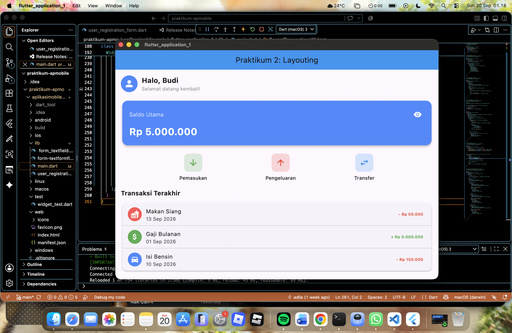
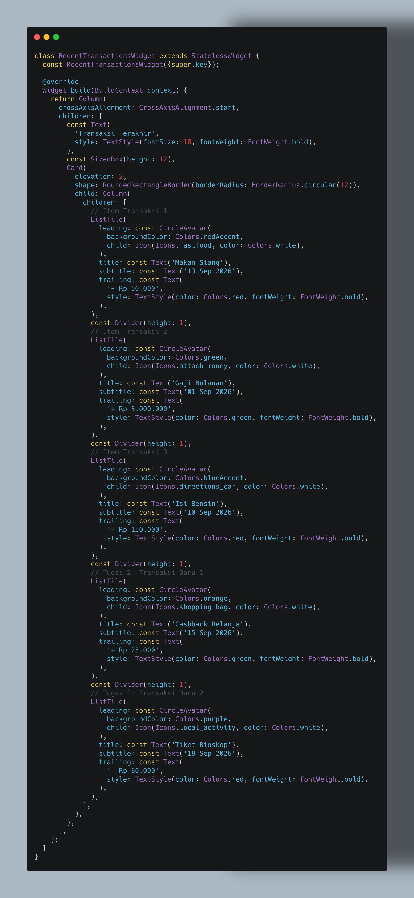
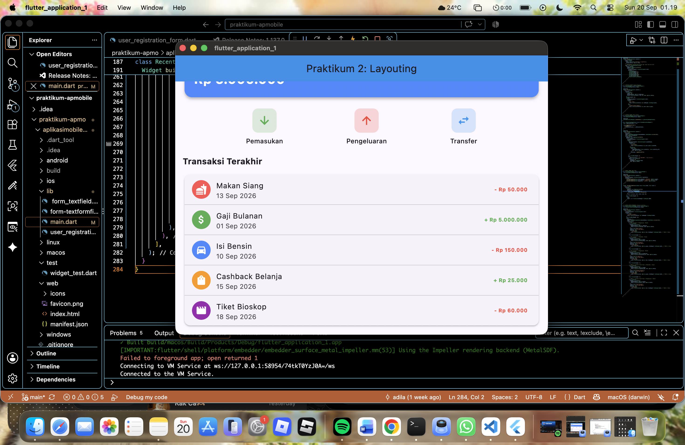

Laporan Praktikum Aplikasi Mobile - Modul 1 & Modul 2
Pengembangan antarmuka pada framework Flutter dibangun berbasis hirarki komponen yang disebut Widget.
Untuk mengelola bagaimana komponen antarmuka merespons perubahan data dan interaksi pengguna, Flutter
membedakan komponennya menjadi dua jenis utama, yaitu StatelessWidget dan
StatefulWidget.
StatelessWidget digunakan untuk elemen antarmuka yang bersifat statis, di mana tampilannya tidak
pernah berubah setelah di-render pertama kali di layar. Penggunaan widget ini lebih ringan dan cepat karena
tidak menyimpan data internal (State) yang berubah. Di sisi lain, StatefulWidget
digunakan untuk elemen antarmuka dinamis yang perlu diperbarui secara kustom sebagai respons terhadap
interaksi pengguna (seperti menekan tombol atau toggle tombol visibility). Pembaruan antarmuka pada
StatefulWidget dilakukan dengan memicu metode setState(), yang memberi tahu
framework untuk merender ulang (rebuild) komponen tersebut dengan nilai data (State)
terbaru.
MaterialApp dan
Scaffold.StatelessWidget dan
StatefulWidget.setState() untuk membangun antarmuka
pengguna yang interaktif.
Membangun antarmuka dasar yang menggabungkan GreetingWidget (StatelessWidget) untuk
menyapa pengguna dan BalanceCardWidget (StatefulWidget) yang merespons ketukan
tombol mata untuk menyembunyikan/menampilkan nominal saldo.
main.dart (Praktikum 1):

Modifikasi komponen BalanceCardWidget sesuai dengan ketentuan berikut:
Colors.blueAccent
menjadi hijau emerald (Colors.teal)."No. Rekening: 1234-5678" di bawah
informasi nominal saldo.main.dart (Setelah Penyelesaian Tugas Modul 1):


StatelessWidget tepat digunakan
untuk elemen UI statis yang tidak berubah. Sebaliknya, StatefulWidget digunakan untuk komponen
interaktif yang mempertahankan state.setState(): Pemanggilan setState()
memberi instruksi kepada Flutter untuk merender ulang antarmuka saat variabel state (seperti
_isBalanceVisible) berubah nilainya.Row, Column,
Card, dan Scaffold memberikan kerangka dasar yang kuat dalam menyusun
layout halaman aplikasi mobile secara rapi.
Perancangan tata letak (layouting) dan gaya antarmuka (styling) merupakan aspek fundamental
dalam menyusun aplikasi mobile yang rapi dan serasi. Pada framework Flutter, pengaturan tata letak secara
horizontal dan vertikal dicapai melalui widget Row dan Column.
Untuk menampilkan daftar data secara linier dan terstruktur, Flutter menyediakan komponen
ListTile, yaitu widget bawaan Material Design yang mendukung penataan baris daftar secara cepat
melalui properti leading, title, subtitle, dan trailing.
Selain itu, widget pembungkus Container memungkinkan pengaturan padding,
margin, serta decoration latar belakang. Dalam kasus daftar komponen yang memanjang melebihi
dimensi viewport layar, penggunaan SingleChildScrollView mutlak diperlukan untuk mencegah
timbulnya galat unbounded pixel overflow.
Row untuk menyusun deretan tombol aksi secara horizontal.Column untuk menyusun daftar riwayat transaksi secara vertikal.Container.ListTile untuk menyusun daftar informasi secara rapi dan
profesional.SingleChildScrollView pada halaman
dashboard.
Mengintegrasikan widget ActionButtonsWidget (Row) untuk tombol aksi serta
RecentTransactionsWidget (Column + ListTile) ke dalam layar dashboard
berskala vertikal yang dapat di-scroll menggunakan SingleChildScrollView.
lib/main.dart (Praktikum 2):

Latihan perbaikan dan penambahan fitur pada Modul 2 meliputi:
Colors.red), sedangkan pemasukan bertanda plus
menggunakan warna Hijau (Colors.green).RecentTransactionsWidget.RecentTransactionsWidget (Setelah Penambahan Tugas Modul 2):


Row dan Column: Row efektif digunakan
untuk mengatur item secara berjejer menyamping, sedangkan Column digunakan untuk menyusun item
secara bertumpuk dari atas ke bawah.ListTile: Widget ListTile mempermudah
pembuatan baris daftar secara instan tanpa perlu menyusun ikon, judul, subjudul, dan teks status dari awal
menggunakan Row manual.SingleChildScrollView sebagai
pembungkus utama komponen layar sangat penting untuk menjaga aplikasi tetap nyaman di-scroll vertikal saat
konten melebihi ukuran layar device.